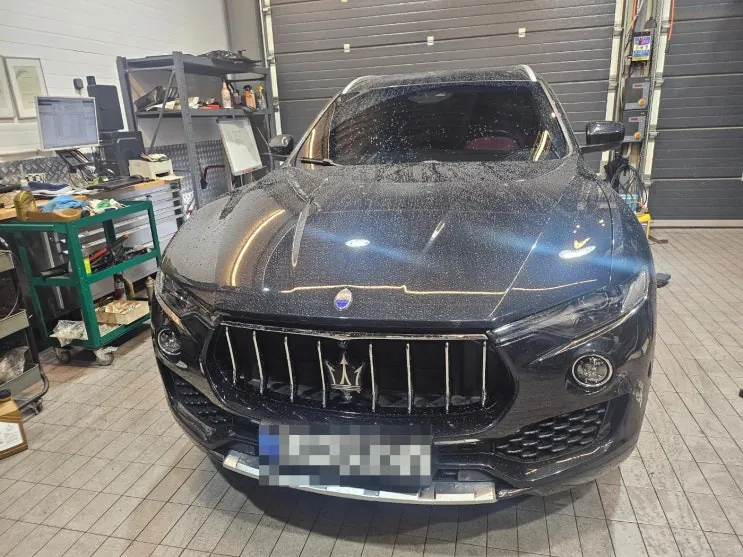
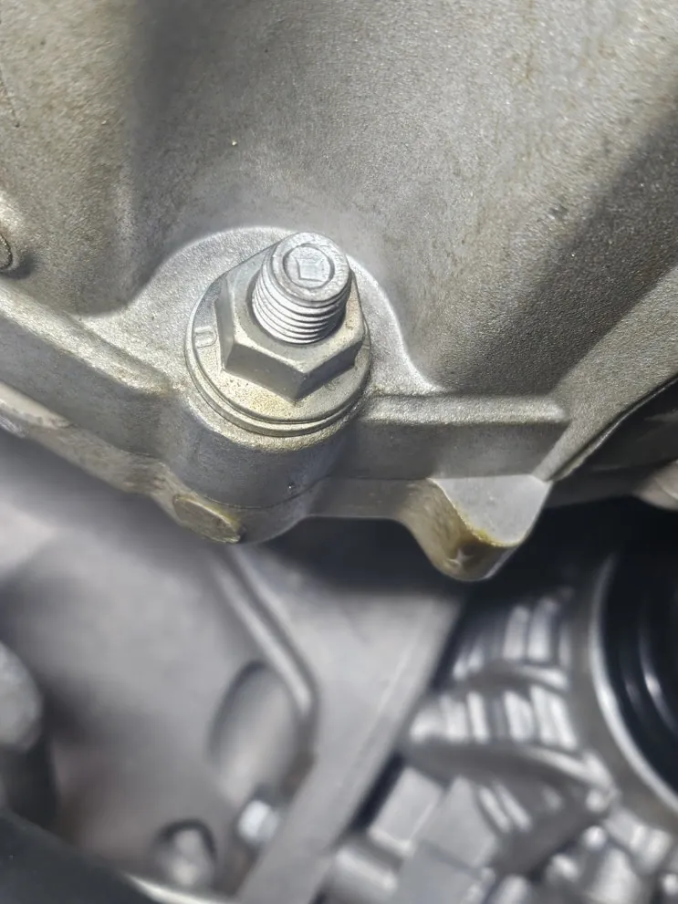
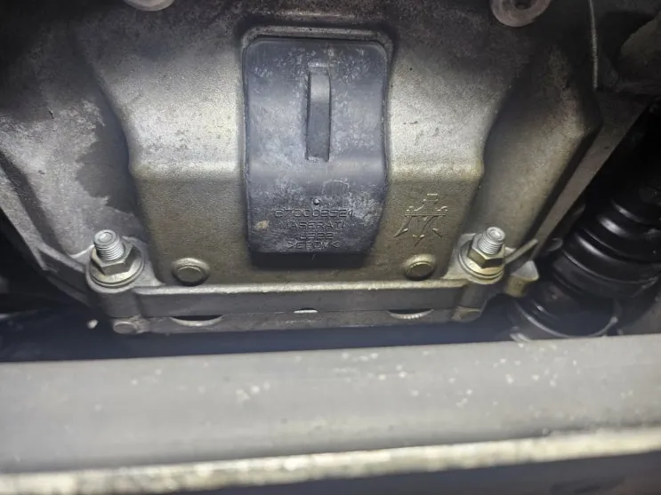
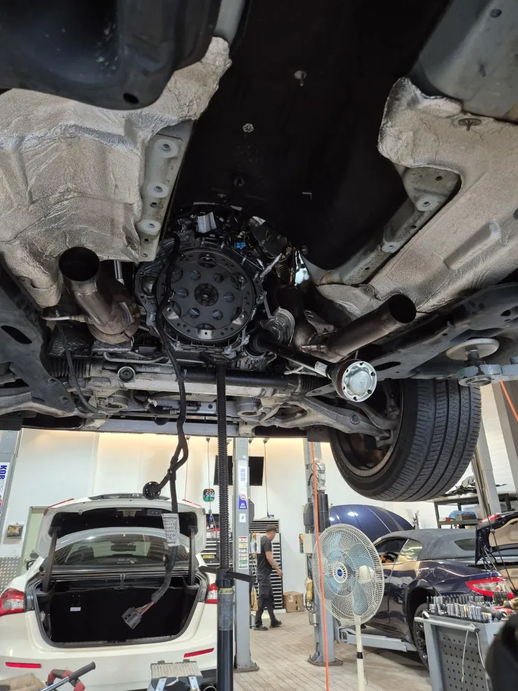
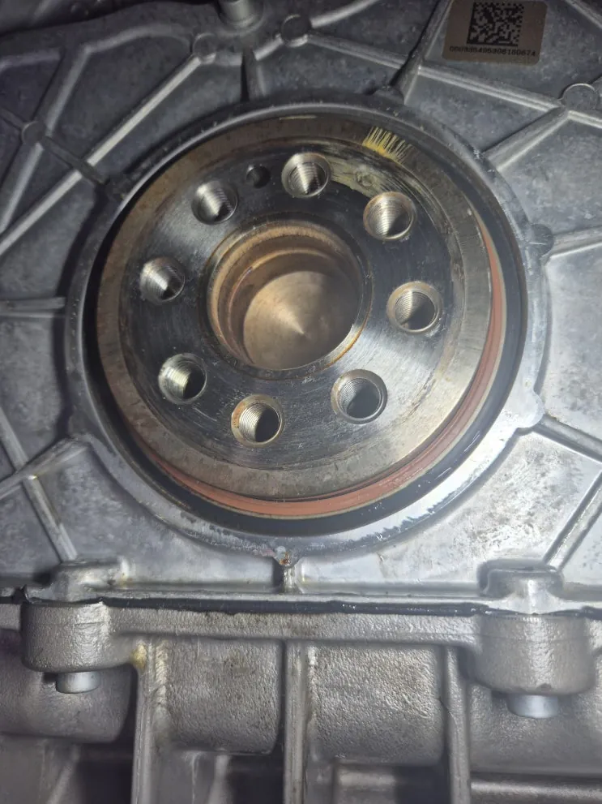
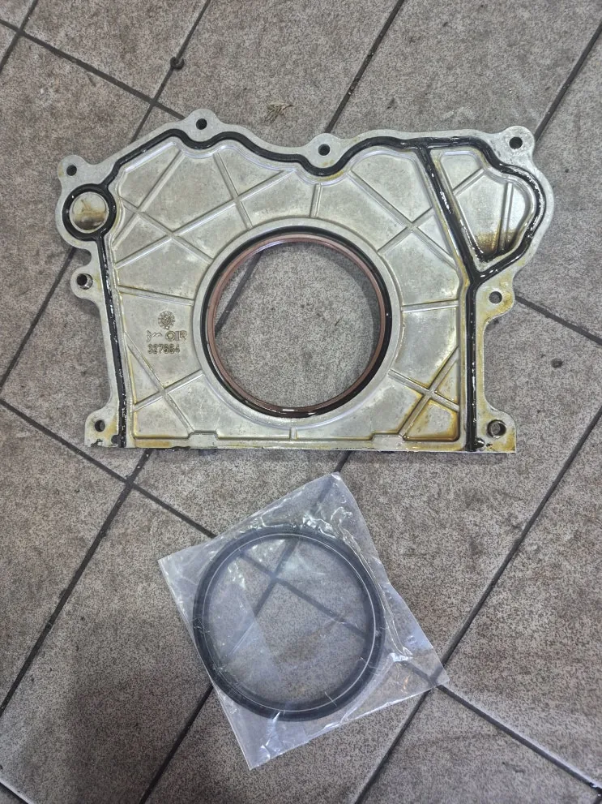
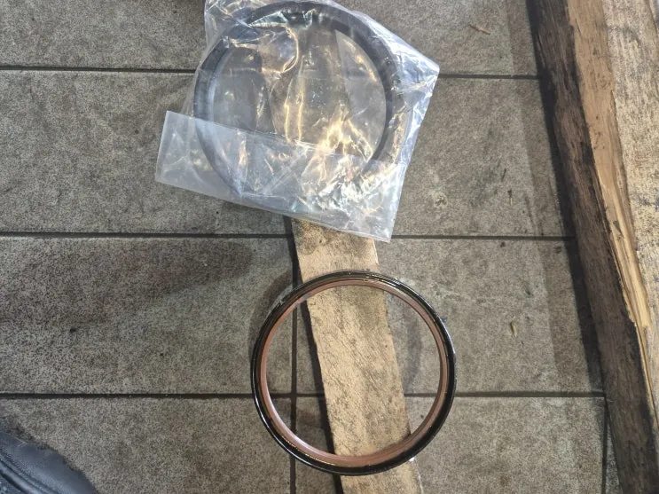
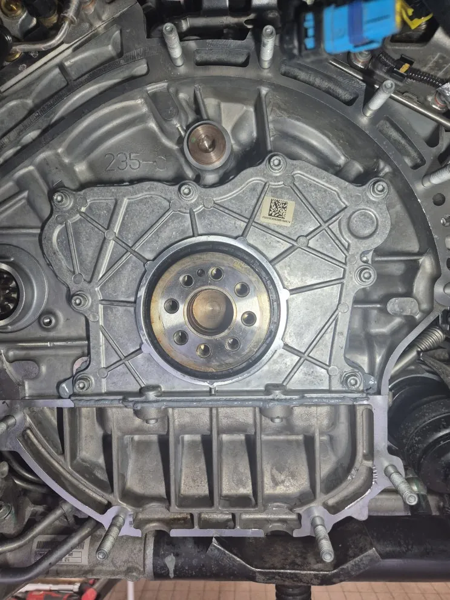

르반떼(M161) 엔진오일 누유 — 리어 크랭크 리테이너·하우징 교환
At a glance한눈에 보기
- 차량
- 마세라티 르반떼
- 증상
- 엔진오일 누유, 리어 크랭크 리테이너 누유
- 진단
- 르반떼(M161)의 엔진오일 누유는 리어 크랭크 리테이너에서 나오고 있었습니다. 중간 머플러와 미션을 떼어 낸 뒤 리테이너 어셈블리를 분리해 리테이너와 하우징을 모두 신품으로 교환하고 실링 후 시운전으로 확인했습니다.
- 작업
- 입고 점검
- 중간 머플러 탈거
- 미션 탈거
- 리어 크랭크 리테이너·하우징 교환
- 실링
- 시운전

입고 경위
다른 정비소에서 엔진오일을 갈다가 누유가 발견된 르반떼(M161)가 문의 후 예약 입고됐습니다. 입고 점검에서 리어 크랭크 리테이너 누유가 확인됐고, 수리 내용을 안내한 뒤 작업했습니다.
리어 크랭크 리테이너는 엔진과 변속기 사이에서 크랭크축 뒤쪽을 막는 부품입니다. 기블리, 콰트로포르테, 르반떼처럼 출력이 높은 마세라티에서 누유가 자주 발견되는 위치입니다.


작업 — 미션 탈거
리테이너에 닿으려면 변속기를 내려야 해, 차를 리프트에 올리고 중간 머플러를 먼저 떼어 낸 뒤 미션을 탈거했습니다. 드러난 리테이너 주변 곳곳에 오일이 묻어 있었습니다.


리테이너·하우징 교환
리테이너 어셈블리를 떼어 내고 리테이너와 하우징을 모두 신품으로 교환했습니다. 부품을 교체한 뒤 실링 작업을 하고 분해의 역순으로 조립했습니다.


출고 점검
조립 후 시운전을 충분히 하며 누유가 다시 생기지 않는지 확인하고 출고했습니다.
엔진오일 교환 때 누유가 있다는 말을 들었거나 주차 자리에 오일 자국이 생긴다면, 해당 부위 사진을 카톡으로 먼저 보내 주세요. 경기도 파주에 있지만 전국 탁송으로도 맡기실 수 있습니다.

자주 묻는 질문
르반떼 리어 크랭크 리테이너 누유는 왜 미션을 내려야 하나요?
리어 크랭크 리테이너는 엔진과 변속기 사이에 있어서, 변속기를 떼어 내야 부품에 손이 닿습니다. 이번 르반떼도 중간 머플러와 미션을 탈거한 뒤 교환했습니다.
이 작업의 원문 기록: 네이버 블로그에서 보기
Consultation
마세라티 르반떼, 비슷한 증상이 있나요?
증상 사진이나 경고등 화면을 카톡으로 먼저 보내 주시면 확인 후 안내해 드립니다. 전국 탁송 상담 가능.